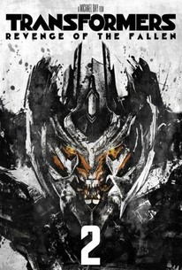
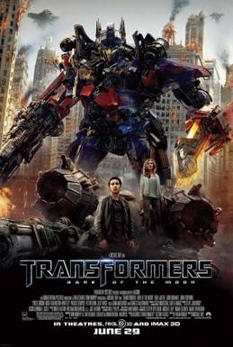
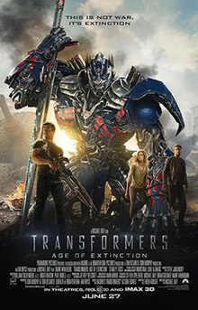
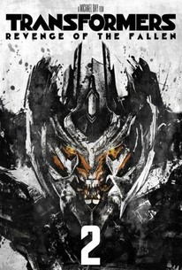
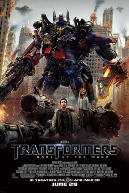
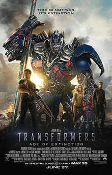

Home
Lyrics
Internet Shenanigans
Favorite Food
Dessert
HTML table
My Schedule
Top 5 Movies
Student form
My top 5
is a series of American science fiction action films based on the Transformers franchise which began in the 1980s.[note 1] Michael Bay has directed the first five films: Transformers (2007), Revenge of the Fallen (2009), Dark of the Moon (2011), Age of Extinction (2014), and The Last Knight (2017).[1][2][3] A spin-off film, Bumblebee, directed by Travis Knight and produced by Bay, was released on December 21, 2018. The series has been distributed by Paramount Pictures and DreamWorks Pictures. The Transformers series has received negative to mixed reception, except for Bumblebee which received positive reviews. It is the 13th-highest-grossing film series, with a total of $4.8 billion; two films in the series have grossed over $1 billion each.
Go back top the top
Transformers: Revenge of the Fallen(2009)
is a 2009 American science fiction action film directed by Michael Bay and is based on the Transformers toy line. It is the sequel to 2007's Transformers, as well as the second installment in the live-action Transformers film series. Taking place two years after the first film, the story revolves around Sam Witwicky (Shia LaBeouf), who is caught in the war between the Autobots, led by Optimus Prime (Peter Cullen) and the Decepticons, led by Megatron (Hugo Weaving). Sam begins having strange visions of Cybertronian symbols, and is being hunted by the Decepticons under the orders of an ancient Decepticon named The Fallen, who seeks to get revenge on Earth by finding and activating a machine that would provide the Decepticons with an energon source, destroying the Sun and all life on Earth in the process. Returning Transformers include Optimus Prime, Bumblebee, Ironhide, Ratchet, Megatron, Starscream, and Scorponok.
Go back top the top
Transformers: Dark of the Moon(2011)
is a 2011 American science fiction action film directed by Michael Bay, and it is based on the Transformers toy line. It is the third installment in the live-action Transformers film series, and is the sequel to Revenge of the Fallen (2009). It is also the first film in the series that was not co-produced by DreamWorks, leaving Paramount Pictures as the sole distributor. The film stars Shia LaBeouf, Josh Duhamel, John Turturro, Tyrese Gibson, Rosie Huntington-Whiteley, Patrick Dempsey, Kevin Dunn, Julie White, John Malkovich, and Frances McDormand. Set two years after Revenge of the Fallen, it follows the warring Autobots and Decepticons' last days of the war as they battle to possess powerful technology from their homeworld crashed on Earth's Moon to restore their home. Returning Transformers include Optimus Prime, Bumblebee, Ironhide, Ratchet, Sideswipe, Wheelie, Megatron, Starscream, Soundwave, and Barricade.
Go back top the top
Transformers: Age of Extinction(2014)
is a 2014 American science fiction action film based on the Transformers toy line. It is the fourth installment of the live-action Transformers film series and the sequel to Dark of the Moon (2011), taking place five years after its events. Like its predecessors, it was directed by Michael Bay and written by Ehren Kruger, with Steven Spielberg and Bay as executive producers. It stars Mark Wahlberg, Stanley Tucci, Kelsey Grammer, Nicola Peltz, Jack Reynor, Sophia Myles, Bingbing Li, Titus Welliver, and T. J. Miller. It does not feature the original human cast from the previous three films, and instead introduces a new human cast and many new Transformers, including the Dinobots. Returning Transformers include Optimus Prime, Bumblebee, Ratchet, Brains, and Megatron (now known as Galvatron). The screenplay was written by Ehren Kruger. Age of Extinction was the first feature film to be shot on smaller digital IMAX cameras, as well as various other film formats, such as IMAX 70mm film cameras, digital stereo 3-D, and anamorphic and spherical 35mm film.
Go back top the top
Transformers: The Last Knight(2017)

is a 2017 American science fiction action film based on the Transformers toy line. It is the fifth installment of the live-action Transformers film series and the sequel to Age of Extinction (2014). Like its predecessors, the film is directed by Michael Bay and features Mark Wahlberg reprising his role from Age of Extinction, while Josh Duhamel, John Turturro, and Glenn Morshower reprise their roles from the first three films, as well as Laura Haddock, Isabela Moner, Jerrod Carmichael, Santiago Cabrera, and Anthony Hopkins all joining the cast. Returning Transformers include Optimus Prime, Bumblebee, Hound, Drift, Crosshairs, Wheelie, Megatron, and Barricade.
Go back top the top
Tranfomers
Tranfomers: Revenge of the Fallen
Tranfomers: Dark of the Moon
Tranfomers: Age of Extinction
Tranfomers: The Last Knight
 




